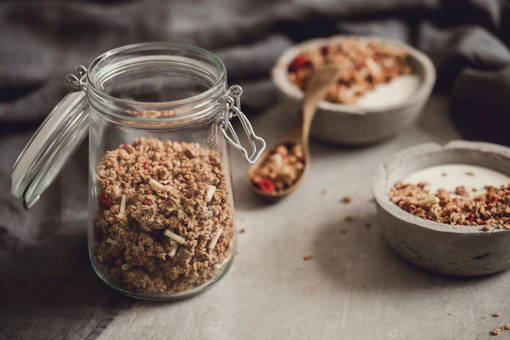

A Delicious Granola Recipe!

This is a granola recipe for more practice for The Odin Project recipes assignment, which is giving me practice using html to build a very basic webpage and links! The recipe used here is retrieved from this wikiHow article!
The Ingredients
- 3 cups of rolled oats
- 1 cup of nuts of your choice. Walnuts are a popular choice for granola!
- 1 cup of seeds of your choice, such as sunflower seeds
- 1 cup of other dry ingredients such as coconut flakes, millet puffs, and etc.
- 0.5 cup of cooking oil, such as olive oil
- 0.5 cup of a fluid sweetener, such as honey or maple syrup
- Dried fruit to taste
- Seasonings, such cinnamon and brown sugar, to taste
The Method
- Combine all of your dry ingredients in a large bowl, and mix them together. You should be mixing the oats, nuts, seeds, and your choice of extra dry ingredients in this step.
- In a seperate bowl, mix up your wet ingredients. These should be the oil and sweetener.
- Mix the bowl with your wet ingredients very thoroughly into your bowl with your dry ingredients. It is important to try to coat all of the dry ingredients with the wet mixture to help ensure an evenly-prepared batch of granola.
- Preheat your oven to 300 degrees Fahrenheit. While your oven is preheating, spread your granola out in a thin and even layer onto a baking sheet. If possible, use a rimmed baking sheet, as it will make the following step significantly easier.
- Bake the granola for about 45 minutes. Stir it every 15 minutes or so to help ensure that the granola gets cooked evenly.
- Once the granola mix is cooked, remove it from the oven, place it in a bowl, and stir in your drier fruits and other seasonings until you get a mix and taste that you are happy with.
You can either eat the granola immediately, or store it in an airtight container to enjoy in the future!